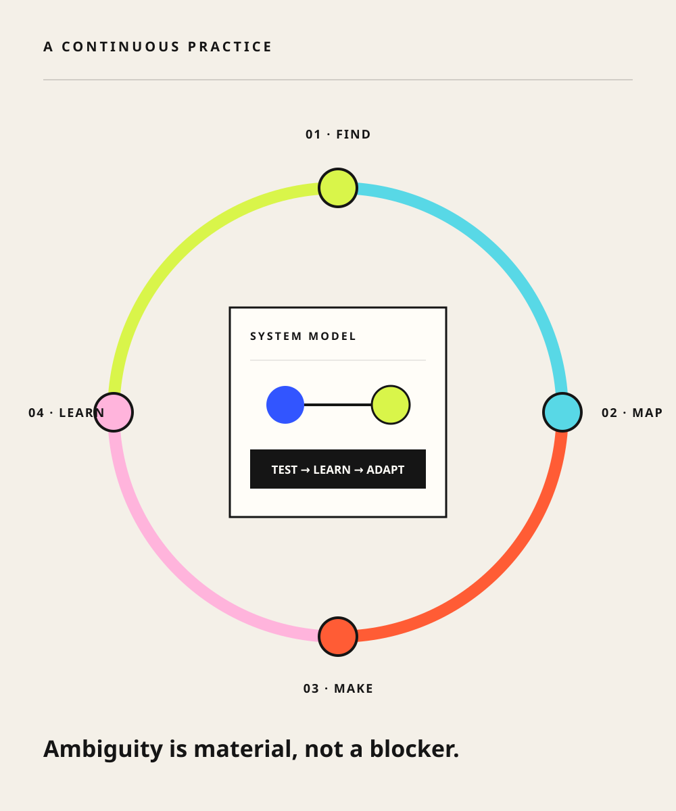

Turning fragmented partner and operations tools into a coherent ordering journey, from fuzzy requirements and cognitive walkthroughs through GA and legacy-tool retirement.
Moving from personal workflow acceleration to evidence-grounded context pipelines, interactive prototypes, agent scenarios, and human review gates.
Role
Designer + experimenter
Boundary
Programme claims separated

Ambiguity is material.Not a blocker.
How I move the work
Four moves. One continuous loop.
01
Find the real problem
Pair stakeholder intent with user interviews, support feedback, incidents, and product telemetry.
02
Map the system
Make entities, dependencies, duplicated content, and operational consequences visible.
03
Make decisions tangible
Use flows and prototypes to align product, engineering, and design before implementation gets expensive.
04
Stay after launch
Review signals after release, prioritize must-fix issues, and feed learning back into the roadmap.
The short version
I’m a product designer who likes the part where the map is still blank.
I work across enterprise commerce at Microsoft, translating complex business rules and operational constraints into systems people can understand and trust.
My best work happens in the messy middle: when requirements are fuzzy, ownership is distributed, and the experience needs a point of view.